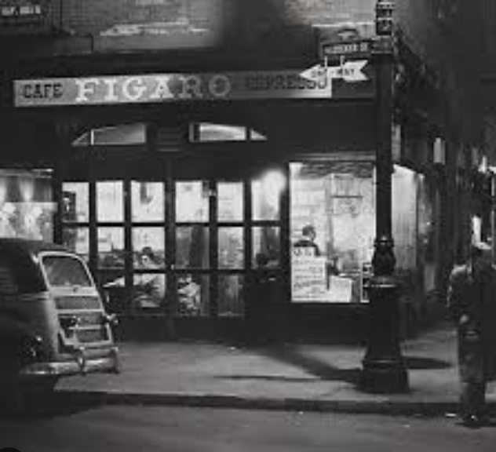
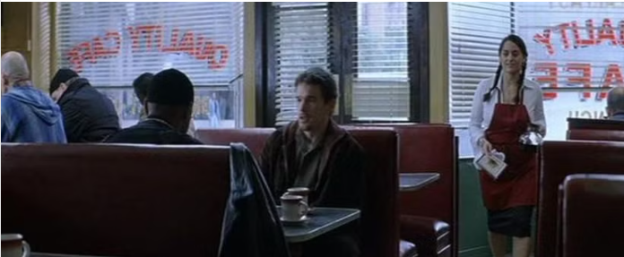

The foundation of Soul of Coffee
Soul of Coffee was found by Nguyen Triet in September 11, 2001 in New York
The main properties that this coffee shop was opened that bring the best coffee for the customer and bring them a cool place to relax or work
The history of Soul of Coffee
 In 2001, Our first name is FIGARO coffee was opened in New York City, aiming to provide high-quality coffee and a cozy atmosphere for coffee enthusiasts. The founder, Nguyen Triet, envisioned a place where people could gather, work, and enjoy exceptional coffee.
Over the years, The shop has changed name to Soul of Coffee expanded its presence across the United States, opening multiple locations in major cities. The brand became known for its commitment to sourcing premium beans, skilled baristas, and a welcoming environment.
Between 2018 and 2022, when corona virus at their peak. The foundation of Soul of Coffee embraced innovation by introducing mobile ordering and delivery services to cater to the evolving needs of its customers. The brand also launched seasonal drinks and food items that quickly became customer favorites.
Today, Soul of Coffee continues to thrive as a beloved coffee destination, staying true to its founding principles while adapting to the changing landscape of the coffee industry.